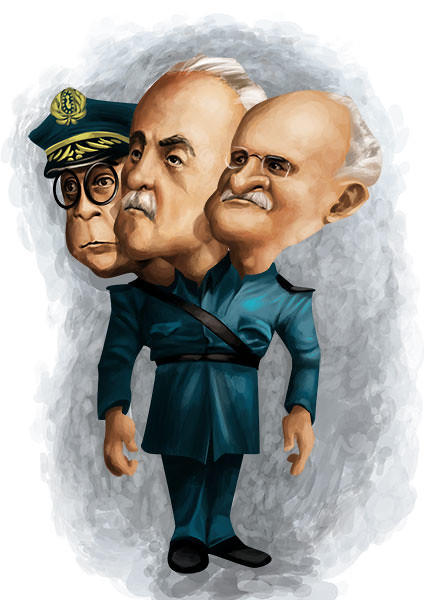
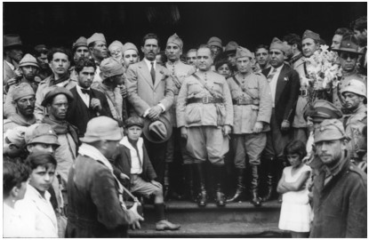
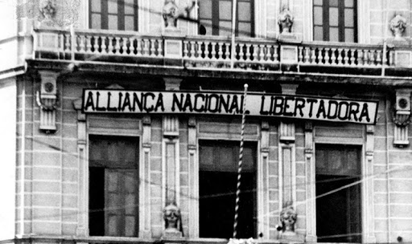
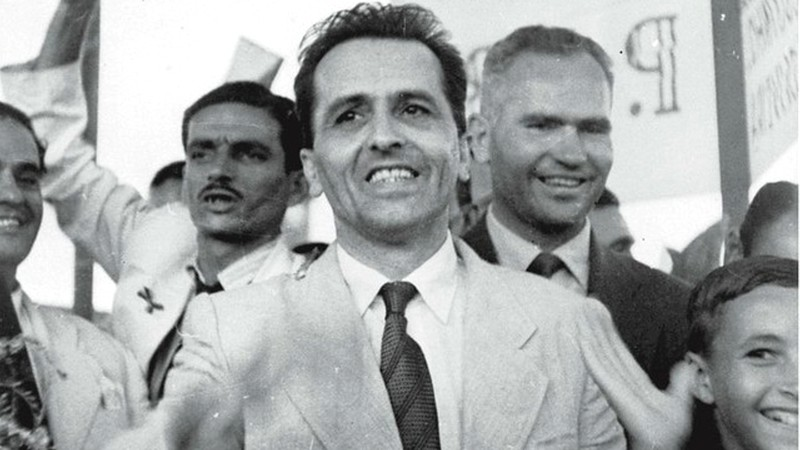

O GOVERNO DE GETULÍO VARGAS - INTENTONA COMUNISTA
CONTEXTO
|  |
|---|
| Da esquerda para a direita: Isaías de Noronha, Mena Barreto e Tasso Frangoso |
Nesse período operários, indústrias e camadas populares estavam insatisfeitas com a política da primeira República. Pois ela excluia boa parte da população do direito ao voto. O operariado luvatam sem descanso por melhores condições de trabalho, sem grandes conquistas; as camadas médias urbanas não conseguiam manter um nível de vida razoável por conta da inflação; os industriais reclamavam que havia uma proteção à agricultura enquanto as indústrias acumulavam prejuízos.
Júlio Preste, nesse cenário assume o cargo de Presidente em 1930, inconformados com a derrota, "ex-tenentes" e membros da aliança Liberal começam a conspirar contra o governo, só que o vice-presidente da chapa de Vargas, João Pessoa foi assasinado por rivais políticos. Nesse ponto Getúlio Vargas se une ao seus companheiros e parte para o Rio de Janeiro para tomar o poder. Entretanto uma tropa ao seu favor, composta por Tasso Frangoso, Mena Barreto e Isaías de Noronha, depôs Washington e entregou o poder a Vargas.
O GOVERNO PROVISÓRIO DE VARGAS
|  |
|---|
| Getúlio assumindo o Governo provisório |
Acontece que as elites paulistas não gostaram da escolha de Vargas, eles formaram a Frente Única Paulista para constitucionalizar o país e pôr um paulista no governo. Em uma das manifestações antigetulista, 4 estudantes foram mortos pela polícia, as iniciais dos nomes dos meninos MMDC (Martins, Miragaia, Drausio e Camargo) tornou-se sigla do movimentos liderado pela elite paulista. Assim em 1932 estoura a Revolução Constitucionalista e em São Paulo a Guerra Paulista.
Apesar de Getúlio vencer a Guerra Paulista, houve um entendimento sobre o que o povo exigia e nomeou o paulista Armando de Salles Oliveira como interventor em São Paulo. Feito o novo código eleitoral em 1932, concedia o direito de voto as mulheres e estabelecia o voto secreto.
RIVALIDADES POLITÍCAS
|  |
|---|
| Sede da Aliaça Nacional Libertadora (ANL) |
Enquanto ao lado do Aliancismo, foi fundada em 1935 com o nome de Aliança Nacional Brasileira (ANL) defendia a reforma agrária, a liberdade de expressão e pensamento, o atendimento às demandas dos trabalhadores.
CONCLUSÃO
|  |
|---|
| Luís Carlos Prestes |
O nome "Intentona" surge da idéia de que essa ação era um plano insensato. A repressão por parte do governo foi intensa, prendeu diversas pessoas da oposição, entre elas: militares, jornalistas, funcionários públicos, escritores e etc. A luta contra o comunismo colaborou na união dos funcionários das forças armadas, preparando o terreno para um golpe que Vargas daria futuramente.
REFERÊNCIAS
Proenem. ERA VARGAS – O GOVERNO PROVISÓRIO. Disponível em: <https://proenem.com.br/enem/historia/era-vargas-o-governo-provisorio/>. Acesso em: 29 de março de 2022.HIGA, Carlos César. "Era Vargas: governo provisório (1930-1934)"; Brasil Escola. Disponível em: <https://brasilescola.uol.com.br/historiab/governo-vargas.htm>. Acesso em 08 de abril de 2022.
FERNANDES, Cláudio. Política do Café com Leite. Mundo Educação, 2022. < https://mundoeducacao.uol.com.br/historiadobrasil/politica-cafe-com-leite.htm>. Acesso em: 29 de março de 2022.
BOULOS, Alfredo. História, Sociedade & Cidadania. Volume 3. 2016 p.108-118
Imagens:
Capa
{kind=link}
Getúlio assumindo o Governo provisório
{kind=link}
Sede da Aliaça Nacional Libertadora (ANL)
Luís Carlos Prestes
Caricatura de Tasso, Mena e Isaías
{kind=link}